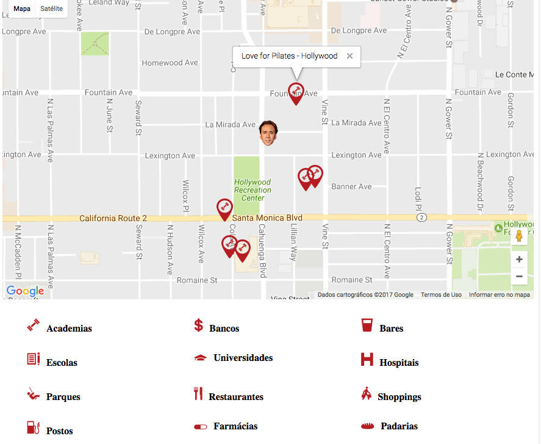

Voltando a escrever aqui após um pequeno hiato. Tempo esse que foi bastante proveitoso, mas isso fica pra outro post. Eis que estou de volta pra trazer algo que foi bem bacana de desenvolver. Surgiu essa demanda em um site da agência onde trabalho e achei legal compartilhar aqui.

Objetivo
O job era pra ajudar Nicholas Cage a achar pontos importantes em Hollywood, e talvez até ajudá-lo a achar um bom filme pra atuar…
Mentira, mas seria bem legal se fosse isso…
Mas o espírito era esse. Por exemplo, você tem um hotel e pode colocar as opções do que tem nas redondezas do seu estabelecimento, como as academias, os shoppings, os restaurantes e por aí vai. Tudo de forma mais amigável, intuitiva e personalizada.
Gerando o mapa e o HTML dos controles
Primeiramente você deve gerar uma key. Você pode pegar mais referências aqui.
Gerado sua chave, vamos chamar a API:
<script async defer src="https://maps.googleapis.com/maps/api/js?key=YOUR_API_KEY&callback=initMap&libraries=places"
type="text/javascript"></script>
Onde tem YOUR_API_KEY substitua pela chave que você acabou de gerar. Se não tiver, você precisa adicionar o parâmetro libraries=places no final.
Vamos gerar nosso html. Também bastante simples.
<div id="map-location"></div>
Seria bacana estilizar esse mapa até mesmo para que ele apareça.
#map-location{
width: 100%;
height: 500px;
}
Chame também o jQuery acima da chamada da API. Vamos utilizá-la pra criarmos o evento de clique em nossas opções.
Essa é minha lista de opções. Crio um id para cada um:
<ul class="lista-interesses">
<li id="gym"><img src="img/icons/gym.png" alt=""><b>Academias</b></li>
<li id="bank"><img src="img/icons/bank.png" alt=""><b>Bancos</b></li>
<li id="bar"><img src="img/icons/bar.png" alt=""><b>Bares</b></li>
<li id="school"><img src="img/icons/school.png" alt=""><b>Escolas</b></li>
</ul>
Vamos para o JS
Primeiramente criaremos as variáveis. O código está comentado pra dar uma força no entendimento. Esse código é quase todo oferecido aqui.
/* Chamamos as imagens aqui */
var baseURL = 'img/mapa/icons';
var icones = {
gym: baseURL + '/pin-gym.png',
bank: baseURL + '/pin-bank.png',
bar: baseURL + '/pin-bar.png',
school: baseURL + '/pin-school.png',
university: baseURL + '/pin-university.png',
pharmacy: baseURL + '/pin-pharmacy.png',
hospital: baseURL + '/pin-hospital.png',
bakery: baseURL + '/pin-bakery.png',
park: baseURL + '/pin-park.png',
restaurant: baseURL + '/pin-restaurant.png',
shopping: baseURL + '/pin-shopping.png',
gas: baseURL + '/pin-gas.png'
};
var iconeAtual = "";
/* Aqui o pin principal, da localização do seu estabelecimento, lugar */
var nicholasCage = 'img/icons/map-marker.png';
/* Essas serão utilizadas mais a frente */
var mapLocation;
var infowindow;
Vamos chamar a função que vai iniciar o mapa:
/* Chamo a função com um parâmetro (pinPlace) */
/* Esse parâmetro vai ser um atributo que vai identificar qual */
/* pin vai aparecer após o clique em uma das opções de nossa lista de lugares */
function initMap(pinPlace) {
iconeAtual = pinPlace;
/* Aqui você seta latitude e longitude */
var pyrmont = {lat: 34.092809, lng: -118.328661};
/* Cria uma referência para o elemento #map-location */
mapLocation = new google.maps.Map(document.getElementById('map-location'), {
/* Seu local baseado nas coordenadas */
center: pyrmont,
/* O zoom no mapa */
zoom: 16,
/* Disabilita o scroll */
scrollwheel: false
});
/* Se houve um evento de clique na lista */
/* E essa lista enviou o parâmetro que vai */
/* Setar quais lugares vão aparecer no mapa */
if(pinPlace){
infowindow = new google.maps.InfoWindow();
var service = new google.maps.places.PlacesService(mapLocation);
service.nearbySearch({
/* O local (baseado nas coordenadas) */
location: pyrmont,
/* O raio em metros */
radius: 500,
/* Os types oferecidos (Ver link após esse código) */
/* type: ['gym', 'bank', 'bar', 'school', 'university', 'pharmacy', 'hospital', 'bakery', 'park', 'restaurant', 'shopping_mall', '', 'gas_station', '', ''] */
type: [pinPlace]
}, function (results, status) {
if (status === google.maps.places.PlacesServiceStatus.OK) {
/* Adicione Nicholas Cage */
pinBuild();
/* Adicione os marcadores na página */
for (var i = 0; i < results.length; i++) {
createMarker(results[i]);
}
}
});
}else{
/* Se não foi selecionado nenhum pin, então mostre Só Nicholas Cage */
pinBuild();
}
}
Aqui estão alguns types suportados. Achei bizarro porque não tem supermercado, foi removido recentemente.
Logo em seguida vem a função que coloca literalmente Nicholas Cage no mapa.
function pinBuild() {
/* Mesma localização usada na varável pyrmont */
var placeLoc = {lat: 34.092809, lng: -118.328661};
var marker = new google.maps.Marker({
map: mapLocation,
position: placeLoc,
icon: nicholasCage
});
}
Função que cria o pin no mapa, que já foi invocada logo acima:
function createMarker(place) {
var placeLoc = place.geometry.location;
var marker = new google.maps.Marker({
map: mapLocation,
position: place.geometry.location,
icon: icones[iconeAtual]
});
google.maps.event.addListener(marker, 'click', function () {
infowindow.setContent(place.name);
infowindow.open(mapLocation, this);
});
}
E por último e não menos importante, vamos disparar nosso evento de clique:
jQuery(document).ready(function($) {
/* Seleciono a lista a cada clique em uma "li" dessa lista */
$('.lista-interesses').on('click', 'li', function(){
/* Pego o valor do seu atributo */
var $attr = $(this).attr('id');
/* E invoco a função repassando o valor do atributo por parâmetro
Esse valor é que vai definir a lista de locais que vão
Aparecer no mapa */
initMap($attr);
});
});
Bacana não? E também não tão complicado quanto parece.
Não sou expert no Google Maps (aliás, bem longe disso), nem mergulhei tão a fundo assim na documentação. Fui apenas um pouco além do básico e me surpreendi do quão fantástico é essa ferramenta, e do absurdo de opções que ela pode oferecer.
Por isso não desista pelo tamanho do código, nem se não entender todos os pormenores. Vá com calma que dá pra chegar lá, não é coisa de outro mundo.
E se você só fez pegar o código, fez copy%paste pra entregar a demanda, volte outra vez, com um pouco mais de tempo e calma e tente entender o que acontece por baixo dos panos. Da próxima vez, vai sair melhor e com mais opções. Você pode melhorar isso bastante, talvez até mesmo desenvolvendo aquela pequena feature que pode ser matadora para seu cliente. E ainda proporcionando uma melhor experiência para o usuário ;)
Bem é isso, espero que ajude você, deixa um feedback bacana, sua dúvida, sua crítica aew embaixo nos comentários, se puder ajudar em algo mais, ficarei bastante satisfeito.
 Nick agradece sua ajuda
Nick agradece sua ajuda